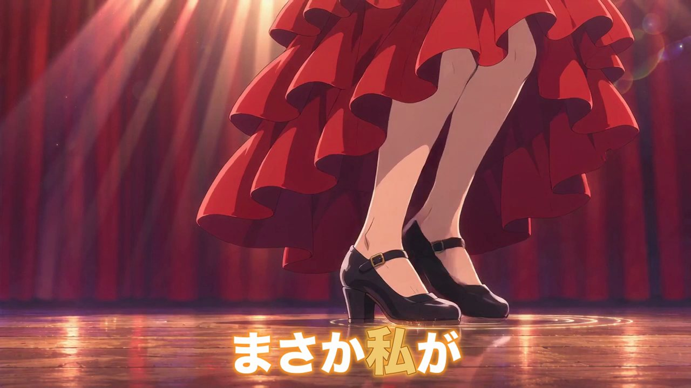
ナレーション まさか私が、
テロップ まさか私が
動き 舞台の床を打つ足元。つま先と踵で床を鳴らし、最後に強く踏み込みます（靴音入り）
全17シーン・約49秒・16:9・アニメ調。前回ご確認いただいた構成をもとに、動画にしました。ページの最後に、ご確認いただきたいことをまとめています。

ナレーション まさか私が、
テロップ まさか私が
動き 舞台の床を打つ足元。つま先と踵で床を鳴らし、最後に強く踏み込みます（靴音入り）
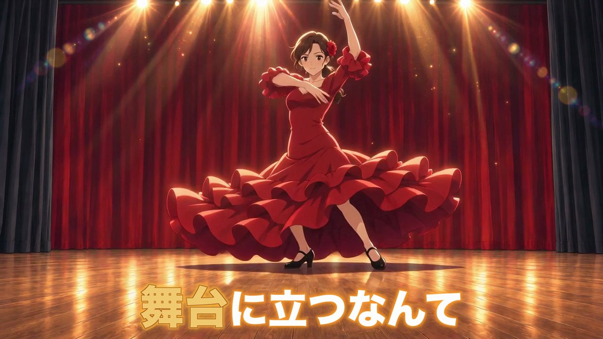
ナレーション 舞台に立つなんて。
テロップ 舞台に立つなんて
動き カメラが上がり、回り終えた主役の赤いスカートがふわりと収まります
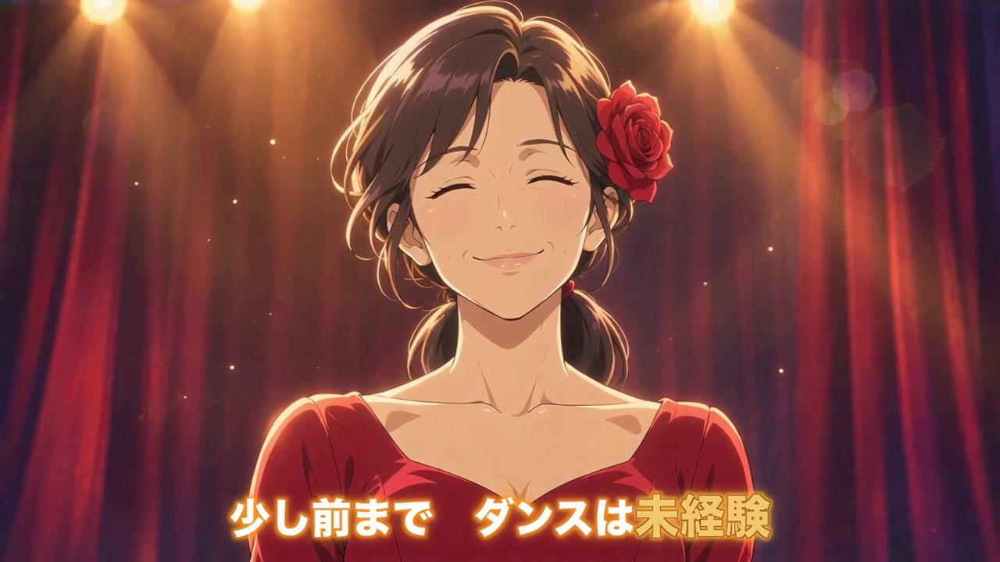
ナレーション 少し前まで、ダンスは未経験。
テロップ 少し前まで ダンスは未経験
動き 踊り終えて、息を整えながら目を閉じて笑う主役。客席の拍手が入ります
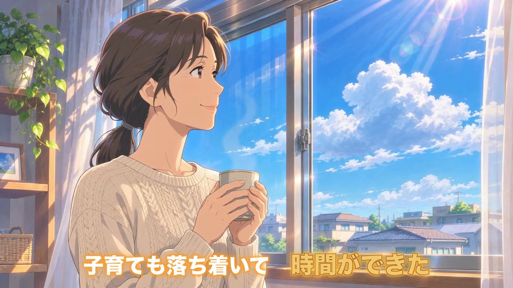
ナレーション 子育ても落ち着いて、時間ができた。
テロップ 子育ても落ち着いて 時間ができた
動き 窓辺で湯のみを両手に、ふと窓の外へ目を向けます
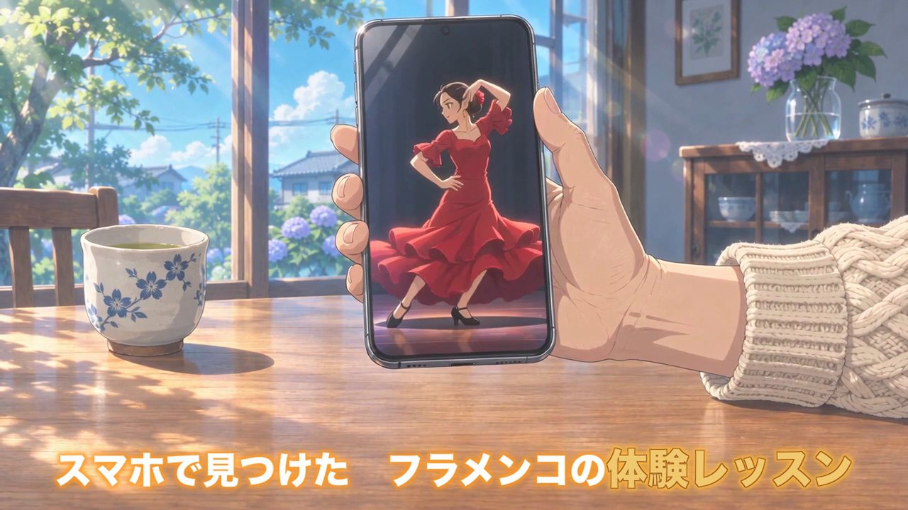
ナレーション スマホで見つけた、フラメンコの体験レッスン。
テロップ スマホで見つけた フラメンコの体験レッスン
動き スマートフォンの画面の中で、フラメンコの踊り手が踊っています
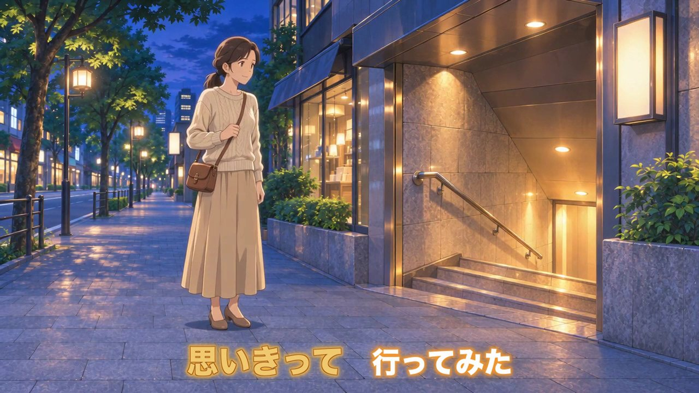
ナレーション 思いきって、行ってみた。
テロップ 思いきって 行ってみた
動き スタジオのある建物の入口へ、一歩踏み出します
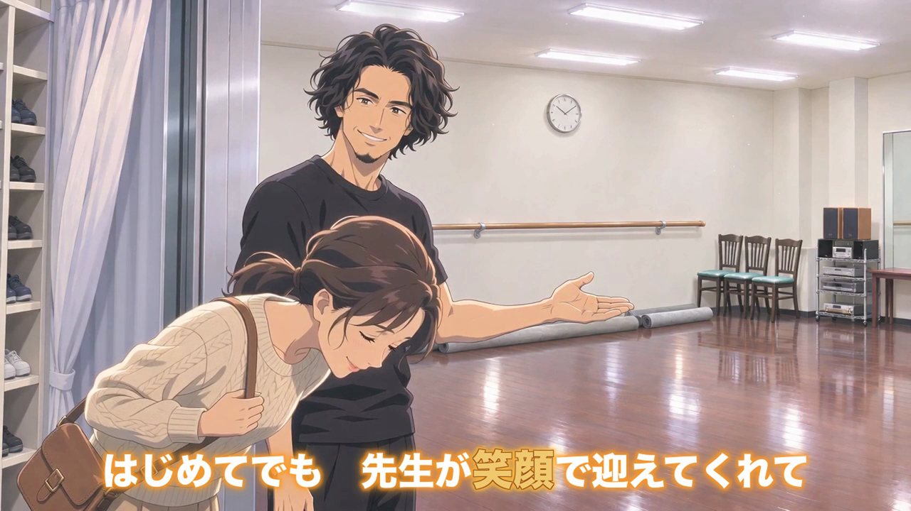
ナレーション はじめてでも、先生が笑顔で迎えてくれて。
テロップ はじめてでも 先生が笑顔で迎えてくれて
動き 先生が笑顔で手を差し出して迎え、主役が会釈します
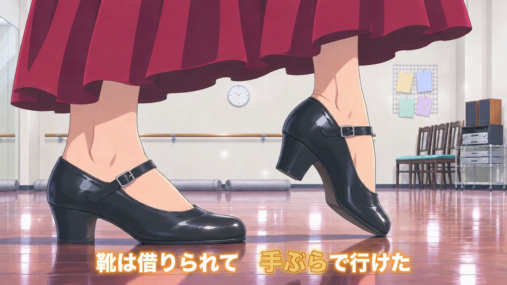
ナレーション 靴は借りられて、手ぶらで行けた。
テロップ 靴は借りられて 手ぶらで行けた
動き 借りた靴で、踵を床に下ろして音を鳴らす足元
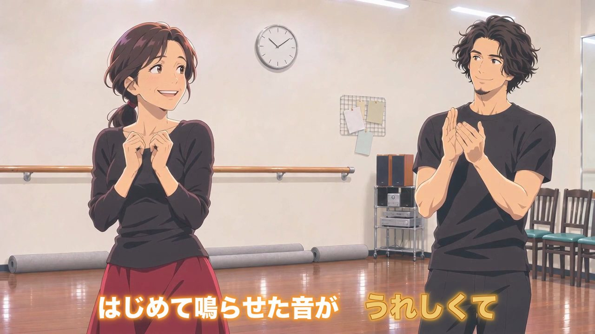
ナレーション はじめて鳴らせた音が、うれしくて。
テロップ はじめて鳴らせた音が うれしくて
動き はじめて音が鳴って、満面の笑顔で喜ぶ主役と、手拍子で応える先生
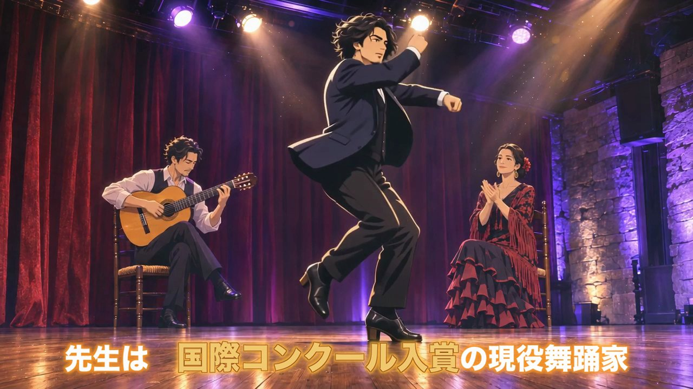
ナレーション 先生は、国際コンクール入賞の現役舞踊家。
テロップ 先生は 国際コンクール入賞の現役舞踊家
動き 舞台で踊る先生。床を打つ足さばきから回転し、腕と目線をぴたりと止める決めまで
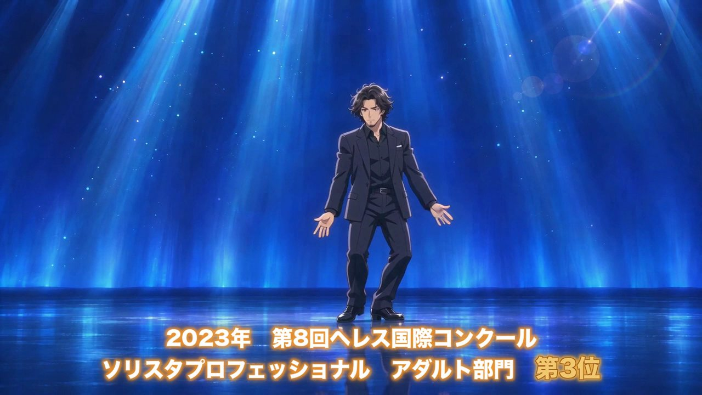
ナレーション 本場スペインのコンクールで、第3位。
テロップ 2023年 第8回ヘレス国際コンクール／ソリスタプロフェッショナル アダルト部門 第3位
動き 青い大きな舞台で踊る先生と受賞歴
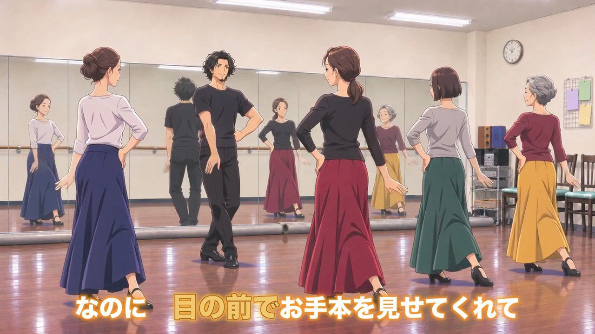
ナレーション なのに、目の前でお手本を見せてくれて、
テロップ なのに 目の前でお手本を見せてくれて
動き 正面の鏡の前で、先生が腕の運び（ブラソ）のお手本を見せ、生徒さんが同じ形で続きます
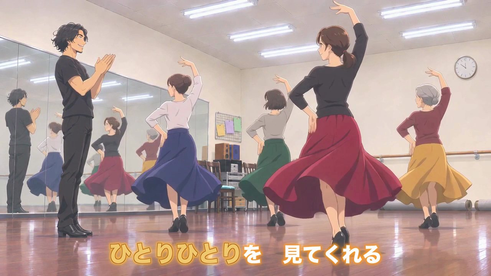
ナレーション ひとりひとりを、見てくれる。
テロップ ひとりひとりを 見てくれる
動き 主役が片腕を上げて回り、先生が横で手拍子（パルマ）をしながら見守ります
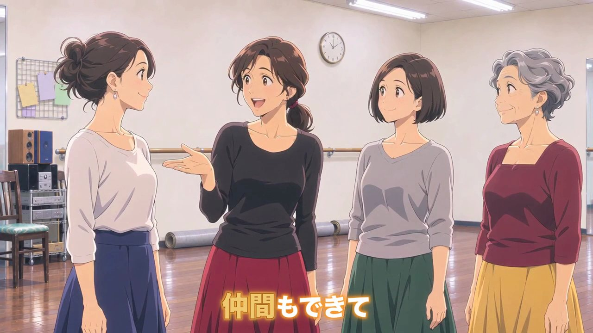
ナレーション 仲間もできて、
テロップ 仲間もできて
動き レッスン仲間と顔を見合わせて話し、笑い合います
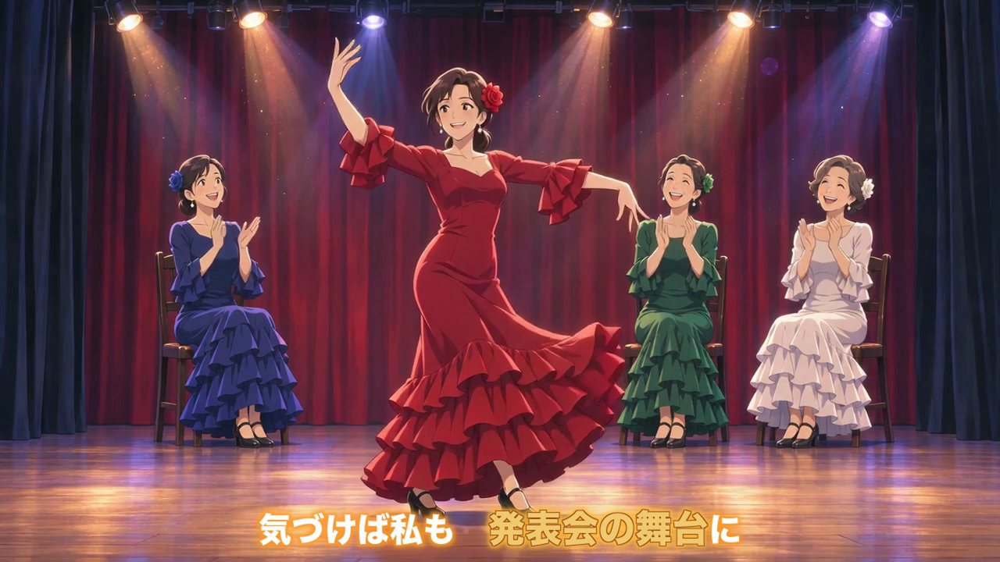
ナレーション 気づけば私も、発表会の舞台に。
テロップ 気づけば私も 発表会の舞台に
動き 仲間の手拍子の中、舞台で手首を返して踊る主役。最初の場面に戻ります
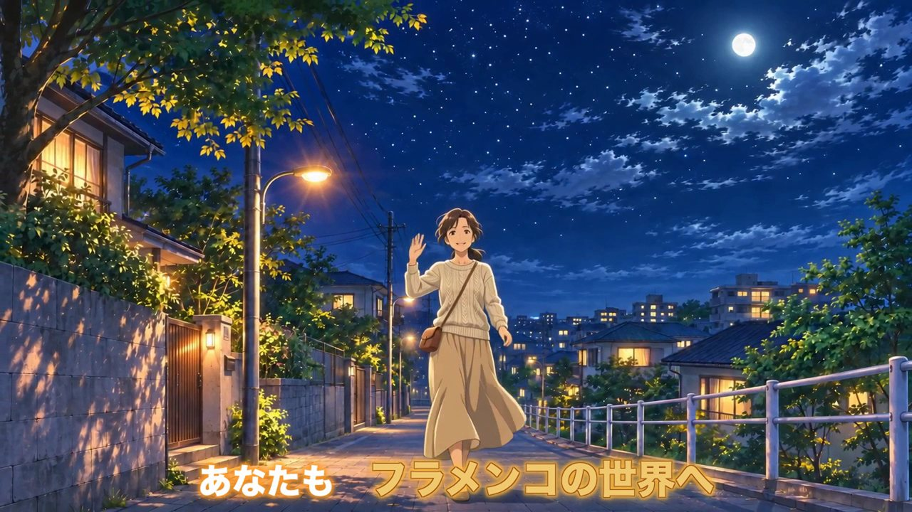
ナレーション あなたも、フラメンコの世界へ。
テロップ あなたも フラメンコの世界へ
動き 夜の帰り道、こちらを向いて弾むように歩いてくる主役。呼びかけの一言
ナレーション フトゥーロフラメンコスタジオ。体験レッスン、受付中です。
テロップ フトゥーロフラメンコスタジオ ｜ ― 土方憲人フラメンコ教室 ― ｜ 新規開講予定クラスあり 生徒募集中 ｜ フラメンコ体験レッスン募集中 ｜ 中目黒駅 徒歩2分 ／ 自由が丘駅 徒歩4分 ｜ 中目黒スタジオTOT 東京都目黒区上目黒1-5-10 中目黒マンション地下15-B ｜ 自由が丘スタジオ 東京都目黒区自由が丘1-26-1 SS自由が丘ビル 地下1F ｜ TEL 080-4407-●●●● ｜ 開講クラスはホームページで ｜ https://www.kentohijikata.net/ ｜ ※教室名・電話・駅からの時間は確認中の仮表記です
動き 教室名・生徒募集・体験レッスン・最寄り駅・2つのスタジオのご住所・お電話番号・ホームページ。文字が順番に現れ、最後は止まって読める時間をとっています
番号と一言で、LINEにご返信ください（例：「①このままでよい」「②ナレーションあり」）。分かるところからで大丈夫です。
このまま進めてよろしいでしょうか。直したいところがあれば、シーン番号と一緒に一度にまとめてお知らせください。特に踊りの動き（S01・S02・S10〜S13・S15）で、フラメンコとして気になるところがあれば教えてください。
| S01 | まさか私が、 |
| S02 | 舞台に立つなんて。 |
| S03 | 少し前まで、ダンスは未経験。 |
| S04 | 子育ても落ち着いて、時間ができた。 |
| S05 | スマホで見つけた、フラメンコの体験レッスン。 |
| S06 | 思いきって、行ってみた。 |
| S07 | はじめてでも、先生が笑顔で迎えてくれて。 |
| S08 | 靴は借りられて、手ぶらで行けた。 |
| S09 | はじめて鳴らせた音が、うれしくて。 |
| S10 | 先生は、国際コンクール入賞の現役舞踊家。 |
| S11 | 本場スペインのコンクールで、第3位。 |
| S12 | なのに、目の前でお手本を見せてくれて、 |
| S13 | ひとりひとりを、見てくれる。 |
| S14 | 仲間もできて、 |
| S15 | 気づけば私も、発表会の舞台に。 |
| S16 | あなたも、フラメンコの世界へ。 |
| S17 | フトゥーロフラメンコスタジオ。体験レッスン、受付中です。 |
テロップは「2023年 第8回ヘレス国際コンクール／ソリスタプロフェッショナル アダルト部門 第3位」（ホームページの記載）としています。先日いただいた、来年から使う予定のホームページ用の画像（チラシの形のもの）では「スペイン・ヘレス国際フラメンココンクール（2023）」となっていました。どちらの書き方に合わせますか。